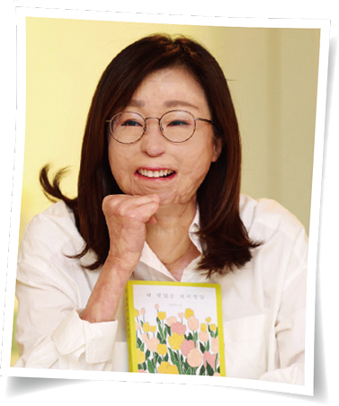

자료 읽기의미 있는 삶을 사는 태도
● 다음 글을 읽고 세 가지 도덕 판단은 각각 서양의 어떤 도덕 판단 기준에 따른 것인지 연결해 보자.
 대학생이었던 이지선 씨는 도서관에서 공부를 마치고 나오던 중 만취한 음주 운전자가 낸 추돌 사고로 인해 전신에 중화상을 입고 안면 장애와 지체 장애 1급을 진단받았다. 사고로부터 23년이 지나고 이지선 씨는 자신의 모교로 돌아와 교수가 되었다.
그녀는 사고 이후 자신의 삶이 물론 쉽지는 않았지만 늘 어렵고 힘들기만 한 것은 아니었다고 말했다. 사고 이후의 인생이 덤으로 얻은 삶이며 하루하루가 선물이었고 행복했다는 것이다. 자신의 옆을 지켜 준 사랑하는 사람들과 슬픔과 아픔을 함께 나누면서 시련을 견뎌 냈다는 이지선 씨는 사고 생존자들에게 “자신의 삶이 동화 속 ‘영원히 행복하게 잘 살았습니다.’와 같은 결말은 아니더라도 분명히 좋은 결말을 맺을 것이라는 기대를 놓지 않고 살아가기를 바란다.”라고 전했다.
- 『중앙일보』, 2023. 3. 1.